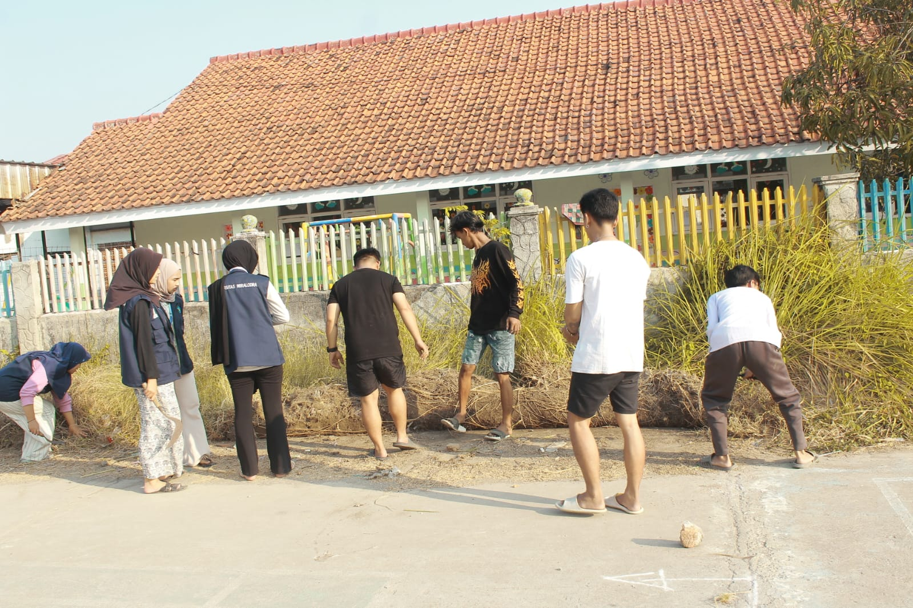

Bakti Sosial Polres Indramayu dalam Rangka Hari Bhayangkara ke-78


Dalam rangka memperingati Hari Bhayangkara ke-78, Polres Indramayu melaksanakan kegiatan bakti sosial di Desa Sukaurip. Kegiatan ini merupakan wujud kepedulian dan pengabdian Polri kepada masyarakat melalui penyaluran bantuan sosial kepada warga yang membutuhkan.
Bantuan yang diberikan diharapkan dapat meringankan beban masyarakat sekaligus mempererat hubungan antara Polri dan warga. Kegiatan bakti sosial ini juga menjadi momentum untuk memperkuat semangat kebersamaan, gotong royong, serta meningkatkan kehadiran Polri di tengah masyarakat.
Pemerintah Desa Sukaurip menyampaikan apresiasi dan terima kasih kepada Polres Indramayu atas perhatian dan bantuan yang diberikan.
Layanan Dukcapil Menyapa Hadir di Desa Sukaurip


Pemerintah Desa Sukaurip bekerja sama dengan Dinas Kependudukan dan Pencatatan Sipil (Disdukcapil) Kabupaten Indramayu melaksanakan kegiatan pelayanan administrasi kependudukan bagi masyarakat.
Kegiatan ini bertujuan untuk mendekatkan layanan kepada warga sehingga proses pengurusan dokumen kependudukan dapat dilakukan dengan lebih mudah dan efisien.
Masyarakat dapat memperoleh berbagai layanan administrasi kependudukan tanpa harus datang langsung ke kantor Disdukcapil.
Pelatihan Tata Boga Bagi Perempuan Kepala Keluarga


Pemerintah Desa Sukaurip menyelenggarakan Pelatihan Tata Boga bagi Perempuan Kepala Keluarga (PEKKA) sebagai upaya meningkatkan kapasitas dan kemandirian ekonomi perempuan.
Melalui pelatihan ini, peserta dibekali materi dan praktik pembuatan olahan makanan yang dapat dikembangkan menjadi usaha rumahan.
Pemerintah Desa Sukaurip berharap pelatihan ini dapat mendorong lahirnya usaha-usaha produktif dari para peserta.
Pelatihan Pengembangan Forum Pengurangan Risiko Bencana (F-PRB)


Pemerintah Desa Sukaurip bersama mitra terkait menyelenggarakan Pelatihan Pengembangan Forum Pengurangan Risiko Bencana (F-PRB) sebagai upaya meningkatkan kapasitas dan kesiapsiagaan masyarakat dalam menghadapi potensi bencana.
Melalui pelatihan ini, peserta mendapatkan pemahaman mengenai identifikasi risiko bencana, langkah-langkah mitigasi, serta pentingnya koordinasi dan peran aktif masyarakat.
Tradisi Mapag Sri Sebagai Wujud Syukur Hasil Pertanian


Masyarakat Desa Sukaurip melaksanakan tradisi Mapag Sri sebagai salah satu warisan budaya yang telah turun-temurun dilestarikan.
Kegiatan ini merupakan wujud rasa syukur kepada Tuhan Yang Maha Esa atas hasil pertanian yang diperoleh serta doa bersama untuk keberkahan dan kelancaran musim tanam berikutnya.
Tradisi Mapag Sri juga menjadi sarana untuk mempererat tali silaturahmi dan menjaga nilai-nilai budaya yang hidup di tengah masyarakat.
Wisuda Peserta Sekoper Cinta Desa Sukaurip


Pemerintah Desa Sukaurip menghadiri kegiatan Wisuda Sekolah Perempuan Capai Impian dan Cita-cita (Sekoper Cinta) sebagai bentuk apresiasi kepada para peserta yang telah berhasil menyelesaikan program pemberdayaan perempuan.
Selama mengikuti program Sekoper Cinta, para peserta memperoleh berbagai pengetahuan dan keterampilan yang mendukung peran perempuan dalam keluarga maupun masyarakat.
Melalui kegiatan wisuda ini, diharapkan para peserta dapat mengimplementasikan ilmu yang telah diperoleh serta berkontribusi dalam pembangunan masyarakat Desa Sukaurip.
Lokakarya Dokumen dan Pengukuhan Forum Pengurangan Risiko Bencana


Pemerintah Desa Sukaurip bersama Pertamina melaksanakan Lokakarya Dokumen dan Pengukuhan Forum Pengurangan Risiko Bencana (F-PRB) sebagai upaya memperkuat kesiapsiagaan masyarakat dalam menghadapi berbagai potensi bencana.
Dalam kegiatan tersebut dilakukan pembahasan dan penyempurnaan dokumen terkait pengurangan risiko bencana di tingkat desa, sekaligus pengukuhan kepengurusan Forum Pengurangan Risiko Bencana (F-PRB) Desa Sukaurip.
Posyandu dan Pemeriksaan Kesehatan Anak Bersama STIKes


Pemerintah Desa Sukaurip bersama STIKes melaksanakan kegiatan Posyandu dan pemeriksaan kesehatan anak sebagai upaya meningkatkan derajat kesehatan masyarakat, khususnya balita dan anak-anak.
Dalam kegiatan tersebut dilakukan penimbangan berat badan, pengukuran tinggi badan, pemeriksaan kesehatan, serta penyuluhan mengenai gizi dan pola hidup sehat.
Seminar Kewirausahaan Dorong UMKM Lebih Inovatif dan Go Digital


Pemerintah Desa Sukaurip bekerja sama dengan Institut Padhaku Indramayu menyelenggarakan Seminar Kewirausahaan sebagai upaya meningkatkan wawasan dan kemampuan masyarakat dalam mengembangkan usaha.
Peserta mendapatkan materi mengenai strategi pengembangan usaha, pentingnya inovasi produk, serta pemanfaatan teknologi digital sebagai sarana pemasaran dan pengembangan bisnis.
Melalui kegiatan ini, diharapkan pelaku UMKM Desa Sukaurip dapat semakin kreatif, inovatif, dan mampu memanfaatkan teknologi digital.
Masyarakat Desa Sukaurip Meriahkan Kunjungan Buyut Babakan


Masyarakat Desa Sukaurip turut memeriahkan kegiatan Kunjungan Buyut Babakan sebagai salah satu tradisi budaya yang masih dilestarikan hingga saat ini.
Acara berlangsung dengan penuh kebersamaan dan diikuti oleh berbagai elemen masyarakat, tokoh agama, tokoh masyarakat, serta pemerintah desa.
Pemerintah Desa Sukaurip mendukung pelestarian tradisi Kunjungan Buyut Babakan sebagai bagian dari kekayaan budaya lokal.
Mahasiswa KKN Bersama Karang Taruna Fajar Sukaurip Gelar Kerja Bakti Membersihkan Lapangan Desa



Mahasiswa Kuliah Kerja Nyata (KKN) UNWIR bersama Karang Taruna Desa Sukaurip melaksanakan kegiatan kerja bakti di area lapangan Desa Sukaurip sebagai bagian dari persiapan menyambut Hari Ulang Tahun (HUT) Kemerdekaan Republik Indonesia ke-81.
Kegiatan kerja bakti meliputi pembersihan rumput liar, semak-semak, serta penataan area lapangan agar lebih bersih, rapi, dan nyaman digunakan sebagai lokasi berbagai perlombaan dan kegiatan peringatan HUT Kemerdekaan RI.
Seluruh kegiatan dilakukan secara gotong royong dengan penuh semangat kebersamaan antara mahasiswa KKN UNWIR dan anggota Karang Taruna Desa Sukaurip.
Kerja bakti ini merupakan wujud kepedulian terhadap kebersihan lingkungan sekaligus bentuk dukungan dalam mempersiapkan sarana dan prasarana agar rangkaian perayaan 17 Agustus di Desa Sukaurip dapat berjalan dengan lancar.
Penyerahan Website Program Kerja Berbasis Data KKN UNWIR kepada Pemerintah Desa Sukaurip
.jpeg)


Sukaurip, 11 Agustus 2026 — Mahasiswa Kuliah Kerja Nyata (KKN) Universitas Wiralodra (UNWIR) telah melaksanakan kegiatan penyerahan Website Program Kerja Berbasis Data kepada Pemerintah Desa Sukaurip, Kecamatan Balongan, Kabupaten Indramayu.
Kegiatan ini merupakan salah satu bentuk kontribusi mahasiswa KKN UNWIR dalam mendukung pemanfaatan teknologi informasi di lingkungan pemerintahan desa.
Website yang telah dikembangkan dirancang sebagai media informasi yang dapat membantu masyarakat memperoleh informasi mengenai Desa Sukaurip secara lebih mudah, cepat, dan terstruktur.
Website tersebut memuat berbagai informasi terkait desa, seperti profil desa, data desa, potensi desa, statistik, pelayanan publik, serta informasi lainnya yang dapat diakses oleh masyarakat.
Melalui website ini, diharapkan penyampaian informasi kepada masyarakat dapat dilakukan secara lebih efektif dan transparan.
Selain itu, website juga dapat menjadi sarana pendukung bagi Pemerintah Desa Sukaurip dalam mengelola dan menyajikan data serta informasi desa secara digital.
Dalam kegiatan penyerahan tersebut, mahasiswa KKN UNWIR juga memberikan penjelasan mengenai pengelolaan website kepada pihak desa, termasuk bagian-bagian informasi yang dapat diperbarui sesuai dengan kebutuhan dan perkembangan data desa.
Dengan adanya website ini, diharapkan Pemerintah Desa Sukaurip dapat terus mengembangkan dan memperbarui informasi secara berkala sehingga website dapat dimanfaatkan secara optimal sebagai media informasi dan pelayanan digital bagi masyarakat Desa Sukaurip.
Kegiatan penyerahan website ini menjadi salah satu bentuk nyata kolaborasi antara mahasiswa KKN UNWIR dan Pemerintah Desa Sukaurip dalam mendukung digitalisasi informasi dan tata kelola data desa.